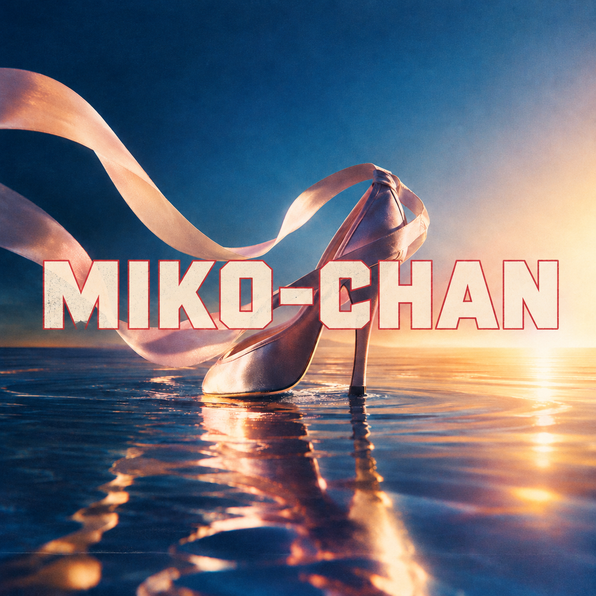

Oh-No Corp RECORDS
MIKO-CHAN
大野物産株式会社
LYRICS
ねえ 聞いて
どんな荒波も
越えてきた 物語
米津玄師の後ろで
MISIAのステージ 輝いて
紅白の光を 浴びながら
身体1つで 心をつかむ
しなやかな指先
眼差しに宿る 強さ
美虹ちゃんが Eh 選んだ道は
きらめく舞台 だけじゃない
海へと投げ出され
終わらない 立ち泳ぎ
力も 希望も
尽きかけた その時
バディの帽子に 隠された
命をつなぐ 1粒
分け合った 甘さを胸に
(Oh, One More)
もう1度 顔を上げた
I will rise, I will rise
どんな荒波の中でも
I will stand, I will shine
この足で 未来を描く
涙も 傷跡も
私を作る 物語
もう何も 何も
私は 私のままで
そして 舞台が変わった今
川口という マッドモンスター
予測不能の 暴走に
今日もシナリオ 書き換えられる
だけど 慌てず 身をかわし
絶妙なバランスで 立ち回る
荒海で磨いた その力
リビングルームでも 活かされる
思い通りに いかない日も
笑うしかない 夜もある
どんな無茶振りが来たって
私のステップは 崩れない
I will rise, I will rise
どんな荒波の中でも
I will stand, I will shine
この足で 未来を描く
誰かの期待を 超えるより
自分の心に 嘘をつかない
もう何も 何も
私は 私のままで
One small candy
One last chance
Even in the darkness
I still have my dance
美虹ちゃん 今日も 前を向く
海でも 舞台でも いつものように
そして ドアが開いた その先に
川口がいる
(Oh, here we go again…)
I will rise, I will rise
I will rise, I will rise
I will rise, I will rise
この声が 届く限り
I will stand, I will shine
何度だって 立ち上がる
あの海も あの光も
今の私に つながってる
どんな明日が 待っていても
私は 私のままで
I will rise!
I will rise!
This is my life
This is my time
アンコールが 響いてる
まだ 終わらない 物語
スポットライトの その向こう
明日へ 歩き出す
PERSONAL MUSIC PLAYER